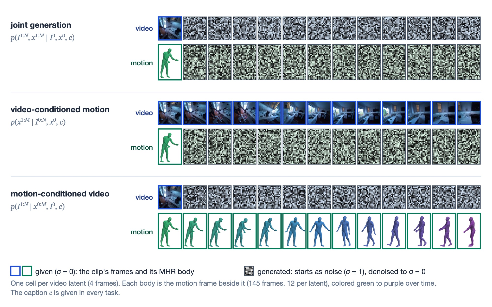
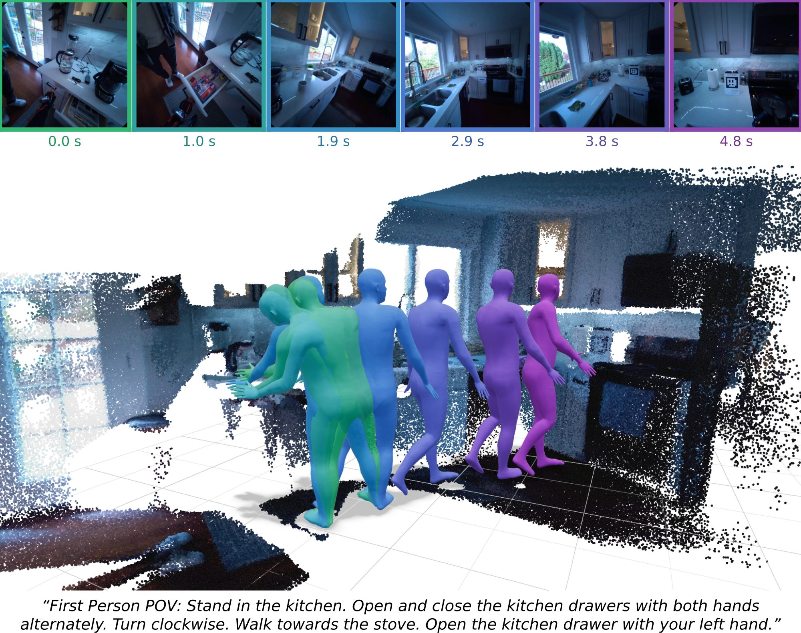
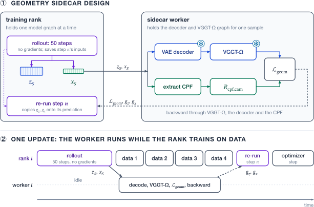

Aligning Egocentric Video and Human Motion Generation
Climbing a staircase
First Person POV: Walk up the stairs.
The video and the motion are both generated from the text prompt and the first video frame.
Generated video
Generated motion
The video is generated from the text prompt, the first frame and the recorded motion shown.
Generated video
Input motion (recorded)
The motion is generated from the text prompt and the recorded video shown.
Input video (recorded)
Generated motion
Walking backwards on a road and kicking a ball
First Person POV: Walk backwards on the road. Subtly turn right. Walk forward and kick the ball with your right foot. Walk backwards.
The video and the motion are both generated from the text prompt and the first video frame.
Generated video
Generated motion
The video is generated from the text prompt, the first frame and the recorded motion shown.
Generated video
Input motion (recorded)
The motion is generated from the text prompt and the recorded video shown.
Input video (recorded)
Generated motion
Walking to a refrigerator and opening both doors
First Person POV: Walk toward the kitchen. Stand in front of the refrigerator. Open the refrigerator with your right hand. Open the left refrigerator door with your left hand.
The video and the motion are both generated from the text prompt and the first video frame.
Generated video
Generated motion
The video is generated from the text prompt, the first frame and the recorded motion shown.
Generated video
Input motion (recorded)
The motion is generated from the text prompt and the recorded video shown.
Input video (recorded)
Generated motion
Walking into an office while looking around, then turning right to the shelves
First Person POV: Walk towards the office area while looking around. Turn to the right. Look at the shelves.
The video and the motion are both generated from the text prompt and the first video frame.
Generated video
Generated motion
The video is generated from the text prompt, the first frame and the recorded motion shown.
Generated video
Input motion (recorded)
The motion is generated from the text prompt and the recorded video shown.
Input video (recorded)
Generated motion
Walking across a patio and turning
First Person POV: Walk on the patio. Turn left. Walk forward. Turn right. Sit on the chair.
The video and the motion are both generated from the text prompt and the first video frame.
Generated video
Generated motion
The video is generated from the text prompt, the first frame and the recorded motion shown.
Generated video
Input motion (recorded)
The motion is generated from the text prompt and the recorded video shown.
Input video (recorded)
Generated motion
Walking from one living area into another
First Person POV: Walk towards another living area with your left arm bent to the front at chest level. Put your left hand at stomach level.
The video and the motion are both generated from the text prompt and the first video frame.
Generated video
Generated motion
The video is generated from the text prompt, the first frame and the recorded motion shown.
Generated video
Input motion (recorded)
The motion is generated from the text prompt and the recorded video shown.
Input video (recorded)
Generated motion
Carrying a laptop through a living room
First Person POV: Walk in the living room while carrying the laptop with both hands. Turn to the left. Stop walking. Move aside an object on the side table with your right hand. Hold the laptop with both hands.
The video and the motion are both generated from the text prompt and the first video frame.
Generated video
Generated motion
The video is generated from the text prompt, the first frame and the recorded motion shown.
Generated video
Input motion (recorded)
The motion is generated from the text prompt and the recorded video shown.
Input video (recorded)
Generated motion
Walking around a bed and picking up a scarf
First Person POV: Walk counterclockwise in the bedroom. Bend your body. Pick up the scarf on the bed with both hands.
The video and the motion are both generated from the text prompt and the first video frame.
Generated video
Generated motion
The video is generated from the text prompt, the first frame and the recorded motion shown.
Generated video
Input motion (recorded)
The motion is generated from the text prompt and the recorded video shown.
Input video (recorded)
Generated motion
Walking down a long hallway and turning left
First Person POV: Walk in a hallway. Turn to the left while swaying both hands on your sides.
The video and the motion are both generated from the text prompt and the first video frame.
Generated video
Generated motion
The video is generated from the text prompt, the first frame and the recorded motion shown.
Generated video
Input motion (recorded)
The motion is generated from the text prompt and the recorded video shown.
Input video (recorded)
Generated motion
Walking past the stairs into a bedroom
First Person POV: Walk in the hallway near the stairs.
The video and the motion are both generated from the text prompt and the first video frame.
Generated video
Generated motion
The video is generated from the text prompt, the first frame and the recorded motion shown.
Generated video
Input motion (recorded)
The motion is generated from the text prompt and the recorded video shown.
Input video (recorded)
Generated motion
Carrying a tray through a cafeteria
First Person POV: Walk along the cafeteria while holding the tray with both hands.
The video and the motion are both generated from the text prompt and the first video frame.
Generated video
Generated motion
The video is generated from the text prompt, the first frame and the recorded motion shown.
Generated video
Input motion (recorded)
The motion is generated from the text prompt and the recorded video shown.
Input video (recorded)
Generated motion
Turning and walking past a pool table in a garage
First Person POV: Turn left. Walk forward in the garage.
The video and the motion are both generated from the text prompt and the first video frame.
Generated video
Generated motion
The video is generated from the text prompt, the first frame and the recorded motion shown.
Generated video
Input motion (recorded)
The motion is generated from the text prompt and the recorded video shown.
Input video (recorded)
Generated motion
One model, three tasks
The tasks differ only in what is given. During training the video and the motion get independent noise levels, so at sampling time a given modality is simply held at noise level zero while the other is denoised from pure noise.

Overview
When you wear a camera on your head, the video it records is reflective of the way your body moves. For example, the camera pans exactly how your head turns, and your hands appear in the frame when your arms bring them there. We build one model that generates egocentric video and the wearer's full-body motion together, or either one given the other. We extend the 8.3-billion-parameter video diffusion model HunyuanVideo 1.5 with a motion stream and train it on about 180 hours of paired video and motion from NymeriaPlus.
A model trained only to denoise each modality might learn their agreement implicitly, but has noticeable inconsistency. For example, the camera movement of its generated video and its generated head turn differently and contradict one another. We close part of this inconsistency in two ways, one implicit and one explicit. The former is a curriculum that hides the text prompt and gives one modality clean, so that each stream has to read the other. Geometric post-training then scores the model's own samples with VGGT-Ω, a 3D reconstruction model. We do this by comparing the camera trajectory VGGT-Ω extracts from the generated video with the generated head pose trajectory. Backpropagating this reward through all 50 sampling steps of an 8B-parameter model with 20k+ tokens is intractably expensive, so we make three simplifications:
- We skip differentiating through the sampler: the reward's gradient with respect to the final sample is reused as the gradient at every denoising step.
- Instead of applying this copied gradient at all 50 steps, we apply it at a single randomly drawn step, reweighted so the update is still an unbiased estimate of the full sum.
- We run VGGT-Ω and compute the reward on a separate node, so it takes no memory or compute from the training GPUs.
Compared with joint finetuning alone for the same number of updates, the full recipe lowers the rotation error between the generated video's camera and the generated head from 21.5° to 16.7°. It also brings both modalities' distributions closer to that of real data: the video FID falls from 71.7 to 63.8, and the motion's Fréchet distance from 42.6 to 28.2.
Why align video and motion?
Modern diffusion transformers generate multiple modalities at once. Stable Diffusion 3 lets text and image tokens attend to each other throughout denoising, DreamZero extends a video model to predict video and robot actions together, and EgoTwin generates egocentric video and human motion jointly. In each case the modality streams learn to agree only through data. Each modality is trained to denoise toward its own target, but nothing in the objective directly penalizes a video and a motion that describe different events.
In egocentric video, such disagreement is the most visible: the camera is mounted on the wearer's glasses, so the camera trajectory implied by the video should match the head pose's motion. We recover the camera's rotation from a video with VGGT-Ω and compare it with the head's, both relative to the first frame. On the ground truth recorded video and recorded motion the two differ by only about 4°, a slight inconsistency. However, when a pretrained video model is adapted to joint generation through existing methods of finetuning, the camera of its generated video and its generated head differ by 22° on average.
One direct fix is to optimize this agreement directly. We can treat the frozen estimator as a differentiable reward and backpropagate through the sampler, as reward-finetuning methods such as DRaFT and AlignProp do for images. However, this is a problem for an 8B-parameter video model because it means differentiating through dozens of denoising steps, the video decoder and the estimator, which is prohibitively expensive in both memory and time. In this project, we integrate some techniques to make this more tractable.
Data and architecture
Data
We train on NymeriaPlus, an extension of the Nymeria dataset, in which people do everyday activities while wearing Project Aria glasses and an inertial motion-capture suit. We use 790 recordings from 196 participants, about 200 hours, and hold out 20 participants entirely, so every result on this page is on people the model never saw in training. Each training clip pairs 4.8 seconds of egocentric video with the wearer's full-body motion and a text prompt describing the wearer's actions.

Architecture
We turn HunyuanVideo 1.5 into a multimodal diffusion transformer (MM-DiT) with a motion, video, and text stream. Each stream has its own modulation, projections and feed-forward network. They meet in one self-attention over the concatenated sequence, with EgoTwin's cross-modal mask deciding which video latents and motion frames attend to each other.
Each motion frame becomes one token of 290 numbers using a head-centric adaptation of Kimodo's representation containing the pose of the glasses' central pupil frame (CPF) as the root, a smoothed head path, and the positions, rotations and velocities of 23 body joints, all in a gravity-aligned frame anchored at the first frame's head. There is no learned motion autoencoder. Rooting the motion at the head rather than the pelvis means the camera can be read straight out of a generated motion, so the model never has to learn the complex pelvis-to-head forward kinematics that link the body to the video.

Training in four phases
We train in four phases, each starting from the previous one's checkpoint:
- Text-to-motion pretraining. The motion stream alone (about 383M parameters) learns to generate motion from text. It reads text features from HunyuanVideo's frozen text layers, so it sees the same features in the later phases.
- Joint finetuning. All weights of the MM-DiT learn to denoise video and motion together. Each modality draws its own noise levels, so the model sees cleaner video beside noisier motion and the reverse, which covers all three tasks.
- Curriculum learning. The text prompt is withheld and one modality is given clean, to make each stream use the other.
- Geometric post-training. A 3D reward aligns the camera of the generated video with the generated head.
The curriculum targets a shortcut we noticed where after joint finetuning, a generated video follows a given motion closely, but a generated motion largely ignores a given video. We suspect the text prompt already describes the action well enough to denoise the motion without looking at the video. For 5,000 updates, the curriculum replaces the text prompt with an empty one and gives one modality clean. It runs 2,000 updates of motion-conditioned video, then a 500-update ramp as the text prompt returns. Then come 2,000 updates in which half of the clips are given their video, so the motion trains as video-conditioned generation, while the other half denoise both modalities without a text prompt. A final 500-update ramp brings the text prompt back.
Geometric post-training
Our model makes a video and a motion together.
It starts from pure noise: a scrambled video and a scrambled body motion.
A network \(f_\theta\) looks at the noisy pair \(y_n\) and makes it a little cleaner.
It repeats this 50 times, for \(n = 0, \dots, 49\). Each pass is one sampling step.
The result \(y_S\): a video seen through the wearer’s glasses, and the motion of their body.
In a real recording, the camera is worn on the head.
The video is filmed from glasses on the wearer’s face, so whenever the head turns, the camera turns with it.
A generated sample should behave the same way. But nothing forces it to.
So we score each sample on whether the two agree.
A frozen 3D model, VGGT-Ω, reads off which way the video’s camera points in every frame.
The headset’s calibration turns the generated head into a camera, too.
The score \(\mathcal{L}_{\text{geom}}\) is the angle between the two cameras, averaged over the 49 frames. Lower is better.
To improve, change the weights \(\theta\) to shrink the angle.
Backpropagation finds how the finished sample should change to lower the score: the endpoint gradient \(g\).
But \(\theta\) shapes every step. The exact gradient has one term per step, and each term carries \(g\) back through all the steps after it.
Going back through the steps takes a lot of memory.
To carry \(g\) back through a step, we need what that step computed on the way forward: its activations.
Keeping them for all 50 passes of an 8B-parameter model over a 20,800-token video piles up far past what a GPU can hold.
Shortcut 1: copy \(g\) to every step.
Pretend each step’s output reaches the finished sample unchanged, and hand \(g\) straight to it. The chain drops out.
This is FDFO’s copied gradient. But the sum still has 50 terms, and each one is a backward pass through \(f_\theta\).
Shortcut 2: keep one term, picked at random.
Before sampling, draw one step \(n\) with probability \(p_n\). The late, nearly clean steps come up most often.
Run all 50 steps without gradients, keeping only step \(n\)’s input. Memory stays nearly empty.
Then re-run step \(n\) with gradients, give it \(g\), and divide by \(p_n\). That single term is our estimate \(\hat G\).
On average, the estimate is the copied gradient.
Dividing by \(p_n\) cancels the chance of drawing step \(n\), so in expectation all 50 terms come back.
Over many updates the estimates average out to \(G_{\text{copy}}\), for one backward pass of one step each.
The most visible sign of alignment is whether the head turns the way the camera pans, so for the last 2,500 updates we score the model's own samples on exactly that. Each training GPU generates a joint sample with the full 50-step sampler, decodes its video latent into 49 frames, and runs VGGT-Ω on them to recover the camera's rotation \(\hat R^k\) at every frame \(k\). From the generated motion we take the head's rotation at the same moments and turn it into a camera rotation with the headset's factory calibration, \(C^k = R^{3k}_{\text{world},\text{cpf}}\,R_{\text{cpf},\text{cam}}\). We express both trajectories relative to their first frame, \(\tilde R^k = (\hat R^0)^\top \hat R^k\) and \(\tilde C^k = (C^0)^\top C^k\), and the loss is the mean angle between them:
$$\mathcal{L}_{\text{geom}} = \frac{1}{N+1}\sum_{k=0}^{N} \angle\big((\tilde R^k)^\top \tilde C^k\big), \qquad \angle(R) = \arccos\frac{\operatorname{tr} R - 1}{2}.$$We use only rotations because VGGT-Ω's translations come in an arbitrary scale. The joint-finetuning loss on real data stays on throughout, and the geometric loss is added with weight \(\lambda_{\text{geom}} = 0.005\). The main difficulty is computing the gradient within a budgeted memory constraint.
Copying the gradient through diffusion time
The first reduction in memory is to reduce the number of gradients needed to compute through the sampling chain. We do this by copying the gradient from the endpoint to every step. The sampler takes \(S = 50\) Euler steps. At step \(n\), the model looks at the noisy video latent \(z_n\) and the noisy motion \(x_n\), and it predicts a video velocity \(\hat v_n\) and a clean motion \(\hat x_n\). Each modality then steps along its own noise schedule, \(\varphi\) for the video and \(\sigma\) for the motion:
$$z_{n+1} = z_n + \Delta\varphi_n\,\hat v_n, \qquad x_{n+1} = x_n + \Delta\sigma_n\,\frac{x_n - \hat x_n}{\sigma_n}.$$The motion head predicts clean motion, so its velocity is \((x_n - \hat x_n)/\sigma_n\). Backpropagating the loss through the frozen VGGT-Ω and the frozen decoder gives its gradient with respect to the finished sample, which we call the endpoint gradients:
$$g_z = \frac{\partial \mathcal{L}_{\text{geom}}}{\partial z_S}, \qquad g_x = \frac{\partial \mathcal{L}_{\text{geom}}}{\partial x_S}.$$The gradient we actually want is with respect to the weights \(\theta\). It has one term per sampling step. Each term multiplies the model's Jacobian at that step, \(J_{v,n} = \partial\hat v_n/\partial\theta\) and \(J_{x,n} = \partial\hat x_n/\partial\theta\), by the gradient of the loss with respect to the state the step produced:
$$G_{\text{exact}} = \sum_{n=0}^{S-1}\Big(\Delta\varphi_n\, J_{v,n}^\top \frac{\partial\mathcal{L}_{\text{geom}}}{\partial z_{n+1}} \;-\; \frac{\Delta\sigma_n}{\sigma_n}\, J_{x,n}^\top \frac{\partial\mathcal{L}_{\text{geom}}}{\partial x_{n+1}}\Big).$$Only the last term uses the endpoint gradients we already have. Every earlier state gradient has to be carried back from the finished sample through all the later steps. That means keeping or recomputing the activations of up to 50 forward passes of an 8B-parameter model over a 20,800-token video, and multiplying their Jacobians together. Following the differentiable-reward variant of FDFO (McAllister et al.), we skip that chain. We copy the endpoint gradients to every step, as if each step's output reached the final sample unchanged:
$$G_{\text{copy}} = \sum_{n=0}^{S-1}\Big(\Delta\varphi_n\, J_{v,n}^\top g_z \;-\; \frac{\Delta\sigma_n}{\sigma_n}\, J_{x,n}^\top g_x\Big).$$The two sums use the same Jacobians and agree exactly in the last term; they differ only in which gradient each Jacobian multiplies. Dropping the chain has another benefit: a product of 50 step Jacobians can amplify or shrink the gradient and make training unstable. For a gradient to be useful, McAllister et al. argue that a copied gradient only needs to point into the same half-space as the exact one to keep descending the loss. In FDFO's image-generation ablations, backpropagating through the sampling chain did worse than copying the endpoint gradient.
One step, drawn at random: an unbiased estimate
Copying removes the chain but not the sum. Each term \(J^\top g\) is a backward pass through the model at that step's inputs, so \(G_{\text{copy}}\) still costs 50 backward passes. We only evaluate one. Before the rollout begins, we draw a single step \(n\) with probability \(p_n\). We then run the 50-step rollout without gradients, saving only that step's inputs. Finally we re-run the model at step \(n\) with gradients enabled and scale its term by \(1/p_n\):
$$\hat G = \frac{1}{p_n}\Big(\Delta\varphi_n\, J_{v,n}^\top g_z \;-\; \frac{\Delta\sigma_n}{\sigma_n}\, J_{x,n}^\top g_x\Big).$$This is an importance-sampled estimate of the sum, and it is unbiased for any distribution that gives every step a nonzero probability. Writing \(T_n\) for step \(n\)'s term of \(G_{\text{copy}}\), the factor \(1/p_n\) cancels the chance of drawing that step:
$$\mathbb{E}_{n\sim p}\big[\hat G\big] \;=\; \sum_{n=0}^{S-1} p_n \cdot \frac{T_n}{p_n} \;=\; \sum_{n=0}^{S-1} T_n \;=\; G_{\text{copy}}.$$Drawing the step before the rollout costs nothing in correctness, because the draw is independent of the rollout's noise. Knowing it in advance is what lets the rollout keep one step's inputs instead of fifty.
The distribution only changes the variance. We use \(p_n \propto |\Delta\sigma_n|/\sigma_n\), the size of the motion term's own coefficient. With this choice, the motion term's weight after reweighting, \((|\Delta\sigma_n|/\sigma_n)/p_n = \sum_m |\Delta\sigma_m|/\sigma_m \approx 3.9\), is the same whichever step is drawn. Every update therefore pushes the motion equally hard, and only the video term's weight varies, between 0.37 and 1.7 on our schedule. Because \(|\Delta\sigma_n|/\sigma_n\) is the fraction of the remaining noise that step \(n\) removes, the draw favors the late, nearly clean steps: the last step is drawn a quarter of the time, and the last ten steps two thirds of the time. In code, the whole update is one extra backward pass of a scalar, with the endpoint gradients held constant:
$$\hat G = \nabla_\theta\,\frac{1}{p_n}\Big(\Delta\varphi_n\,\langle g_z, \hat v_n\rangle \;-\; \frac{\Delta\sigma_n}{\sigma_n}\,\langle g_x, \hat x_n\rangle\Big).$$This sits between two earlier designs. ReFL also supervises a single random step, but it stops sampling there and scores that step's one-step prediction of the clean sample. We finish the sample, score the real output, and reweight the step by \(1/p_n\) so that the expectation is the full copied gradient. FDFO trains on every step of a rollout, but one rollout of our video is costly enough that we can afford only one rollout, and one re-run step, per GPU per update.
The geometry sidecar
The copied gradient makes the generator's side cheap: one gradient-free rollout and one re-run step. The reward is still heavy. To return \(g_z\), we have to backpropagate through the VAE decoder on 49 frames and the one-billion-parameter VGGT-Ω on every frame, and their activations are comparable in size to the MM-DiT's own. Freezing these models removes their parameter gradients and optimizer state but not their activations. Fully sharded data parallelism (FSDP) doesn't help either, because it shards parameters, gradients and optimizer state, not per-sample activations. So we move the reward to a second node.
The training node trains the MM-DiT with FSDP across eight GPUs. The second node, the geometry sidecar, runs eight independent workers, one per GPU, each holding the decoder and VGGT-Ω. Each training rank gets a worker of its own because FSDP keeps the ranks in lockstep: they exchange weight shards before and after every layer, so if two ranks shared a worker, the one served second would stall the whole node.
The copied gradient also keeps the traffic between the nodes small. After its rollout, a rank sends its worker only the finished sample \((z_S, x_S)\), detached from any graph, and the serial number of the headset that recorded the clip. The worker treats the two tensors as fresh inputs that require gradients. It decodes the video, runs VGGT-Ω with activation checkpointing over the 49 frames, turns the generated head into a camera with that headset's calibration, evaluates the loss, and backpropagates it to its inputs. It sends back three things: the loss, \(g_z\) and \(g_x\). Meanwhile, the rank trains on its four ordinary data microbatches. It kept only the inputs of the step it drew (the noisy latent and motion, the noise levels, the step size and the random-number state), and the rollout held no activations because it ran without gradients. When the gradients arrive, the rank re-runs that step and applies them to its prediction.

What remains expensive is the rollout itself. On two nodes of eight B200 GPUs, a post-training update takes about 42 s, against about 3 s for a joint-finetuning update, and the 50-step rollout accounts for about 34 s of it.
Results
We compare four models, each trained for 12,500 updates: joint finetuning alone, with the curriculum, with geometric post-training, and with both (the final model). A model that leaves out a phase spends those updates on the joint-finetuning loss instead, so all four are matched in training steps. Each is evaluated on the same 64 clips from the 20 held-out participants, drawing one sample per clip and task with the clip's fixed seed.
Camera–head consistency
| Curriculum | Geometry | Self-consistency | Video-conditioned | Motion-conditioned |
|---|---|---|---|---|
| 21.5 | 29.7 | 15.8 | ||
| ✓ | 19.5 | 31.4 | 14.8 | |
| ✓ | 18.6 | 27.6 | 14.1 | |
| ✓ | ✓ | 16.7 | 29.6 | 14.1 |
Rotation error in degrees, relative to the first frame (lower is better): the joint video's camera against the joint head (self-consistency); the generated head against the recorded head, given the recorded video (video-conditioned); and the generated video's camera against the recorded head, given the recorded motion (motion-conditioned). VGGT-Ω's camera from the recorded video lies 3.8° from the recorded head, the lowest error the camera-based columns can reach. Best in bold, second best underlined.
The final model is the most self-consistent: the camera of its generated video and its generated head differ by 16.7°, against 21.5° after joint finetuning alone, and each phase helps on its own. Given recorded motion, the generated video's camera also follows the recorded head more closely (15.8° to 14.1°). Given recorded video, the generated head barely changes (29.7° to 29.6°).
The two conditioned columns also show how much each stream relies on the other, which we measure as how well a generated stream agrees with the modality it was given. A generated video relies strongly on a given motion: its camera lies 14–16° from the recorded head in every model. A generated motion relies on a given video much less: its head stays about 28–31° from the recorded head in every model.
Video and motion quality
| Video FID | Motion FD, pose | Motion FD, velocity | |||||
|---|---|---|---|---|---|---|---|
| Curriculum | Geometry | Joint | Motion-cond. | Joint | Video-cond. | Joint | Video-cond. |
| 71.7 | 65.8 | 42.6 | 30.9 | 0.60 | 0.62 | ||
| ✓ | 63.5 | 59.5 | 34.1 | 32.1 | 0.64 | 0.60 | |
| ✓ | 63.4 | 57.7 | 23.8 | 21.3 | 0.42 | 0.38 | |
| ✓ | ✓ | 63.8 | 55.6 | 28.2 | 21.0 | 0.37 | 0.37 |
Fréchet distances to the same clips' recordings (lower is better). Video FID uses Inception-v3 features of the 48 generated frames after the given first frame. Motion FD is computed directly on the standardized 290-dimensional motion features of the 144 generated frames (pose) and of their frame-to-frame differences (velocity), with no learned motion encoder. Motion-conditioned video uses the recorded motion, so it has no generated motion to score.
Both alignment phases bring the generated video closer to real video. In joint generation, the curriculum and geometric post-training each lower the video FID by about 8 points, from 71.7 to 63.4–63.8, and the final model has the lowest FID for motion-conditioned video, 55.6. Geometric post-training has the largest effect on the motion. On its own it cuts the pose Fréchet distance in joint generation from 42.6 to 23.8, and the final model has the lowest velocity Fréchet distance in both tasks.
Hands
| Curriculum | Geometry | Joint | Motion-cond. video | Video-cond. motion |
|---|---|---|---|---|
| Recorded | 0.83 [0.77, 0.88] | |||
| 0.65 [0.58, 0.71] | 0.72 [0.64, 0.78] | 0.72 [0.63, 0.79] | ||
| ✓ | 0.73 [0.64, 0.80] | 0.76 [0.67, 0.84] | 0.73 [0.65, 0.80] | |
| ✓ | 0.69 [0.60, 0.77] | 0.76 [0.67, 0.82] | 0.72 [0.64, 0.80] | |
| ✓ | ✓ | 0.69 [0.60, 0.76] | 0.69 [0.59, 0.77] | 0.74 [0.66, 0.81] |
HandScore with 95% clip-bootstrap intervals (higher is better). Joint: both generated. Motion-conditioned video: a generated video with the recorded motion. Video-conditioned motion: the recorded video with a generated motion.
HandScore, from EgoTwin, asks whether the video and the motion agree on the wearer's hands. A vision-language model (Qwen3-VL-32B) reports whether each hand is visible in every fourth frame, and the motion's hands are projected through the headset's calibrated camera to decide whether they should be; the score is the F-score averaged over both hands. Hand detection on egocentric video is hard even for this model. Recorded pairs score only 0.83, mostly because it misses the black gloves of the motion-capture suit, and pairing a video with another clip's motion scores about 0.43. The curriculum lifts the joint HandScore from 0.65 to 0.73.
Limitations and future work
The alignment gains are modest, and the motion still makes little use of the video when it is given. The geometric objective supervises only rotations, because VGGT-Ω's translations have no metric scale, so it shapes how the head turns but not where it travels. Post-training is slow, because every update needs a 50-step rollout. And the training motion comes from NymeriaPlus's MHR fit of inertial motion capture, whose head pose does not follow the Aria glasses exactly.
The motion's weak use of the video points to training objectives that make it need the video, or to guidance on the given video at sampling time, separate from the text guidance. A translation-aware objective with metric scale, a training set built from head-corrected motion, and a learned motion evaluator would each make the alignment and its measurement more complete. Longer, autoregressive generation would bring the model closer to its intended use: predicting what a person will see and do next.
Citation
@mastersthesis{zhang2026aligning,
title = {Aligning Egocentric Video and Human Motion Generation},
author = {Zhang, Anthony},
school = {University of California, Berkeley},
year = {2026}
}
Acknowledgements
We thank David McAllister, Vongani Maluleke, Hongsuk Choi, Brent Yi, Kie Horiuchi, Jiaman Li, and Guanya Shi for their helpful feedback and discussion.